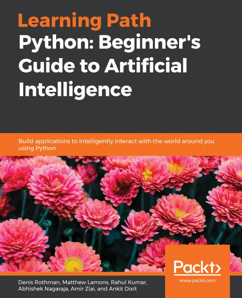

Course Details
-
The course consists of, per week,
- 3 hours of lectures
- 2 hours of lab exercises
Reference Books
|
||
|  |
|
|
|
||
 |
|
Topics Covered
- Brief history of AI
- Search and problem solving
- Knowledge representation
- Probabilistic reasoning
- Machine learning
- Computer vision and image processing
- Speech and language processing
- Robotics
- Social and ethical implications of AI
- Potential and limitations
Keyword Syllabus
- A Brief History of Artificial Intelligence
- Naive Bayes
- K-Nearest Neighbour
- K-Means Clustering
- Perceptron and Multi-Layer Perceptron
- Fundamentals of Image Processing
- Convolutional Neural Networks
- Minimax and Alpha-beta Pruning
- Artificial Intelligence Ethics
Intended Learning Outcomes
On successful completion of this course, students are expected to be able to:- Demonstrate understanding of the historical perspective and development of artificial intelligence (AI)
- Demonstrate understanding of the basic elements of AI thinking
- Demonstrate proficiency in applying basic principles and techniques of AI and using AI software tools to solve problems in a range of applications
- Demonstrate awareness of the social and ethical implications as well as potential and limitations of AI
Prerequisite & Exclusions
Pre-requisite: COMP 1021 OR COMP 1029P.
Exclusion: COMP 3211, COMP 4211, COMP 4221, COMP 4331, COMP 4332, COMP 4421, COMP 4471, COMP 4901K, COMP 4901L, ELEC 4130, ELEC 4230, IDPO 4110, ISOM 3360, MATH 4336, MATH 4432, RMBI 4310, COMP 5211, COMP 5212, COMP 5213, COMP 5221, COMP 5222, COMP 5223, COMP 5331, COMP 5421
Exclusion: COMP 3211, COMP 4211, COMP 4221, COMP 4331, COMP 4332, COMP 4421, COMP 4471, COMP 4901K, COMP 4901L, ELEC 4130, ELEC 4230, IDPO 4110, ISOM 3360, MATH 4336, MATH 4432, RMBI 4310, COMP 5211, COMP 5212, COMP 5213, COMP 5221, COMP 5222, COMP 5223, COMP 5331, COMP 5421